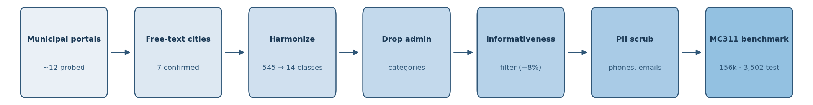
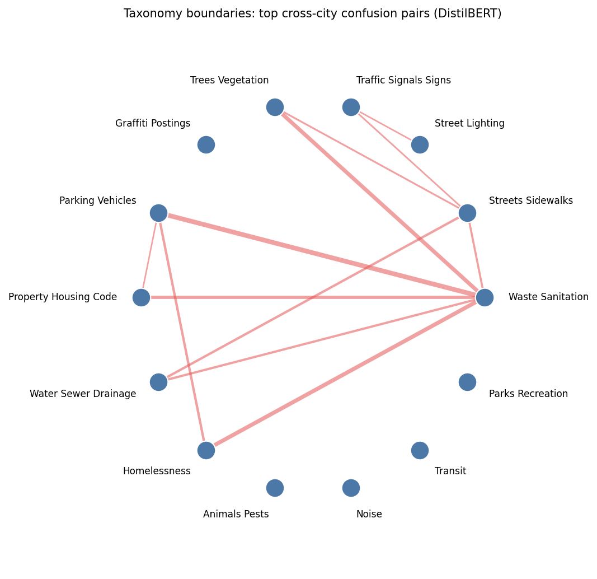
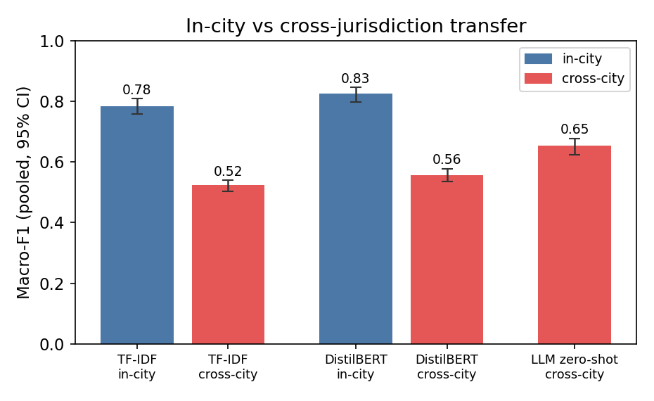
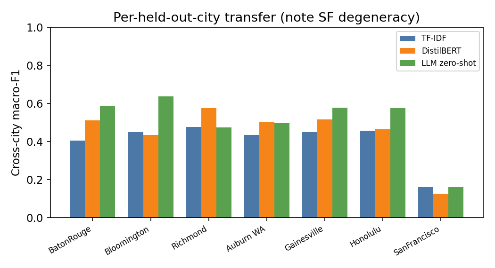
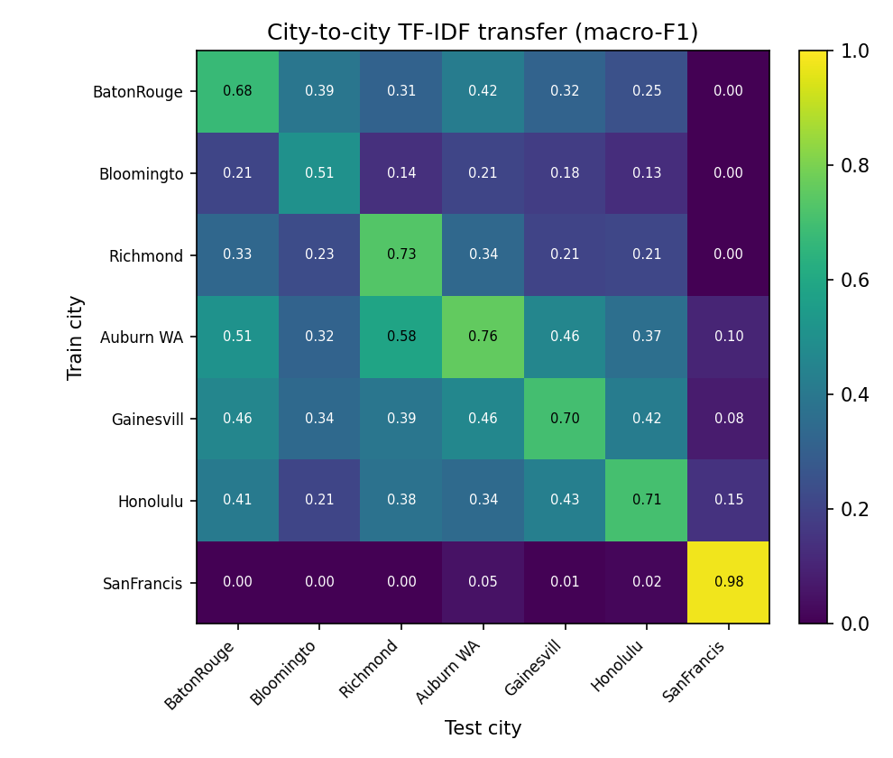
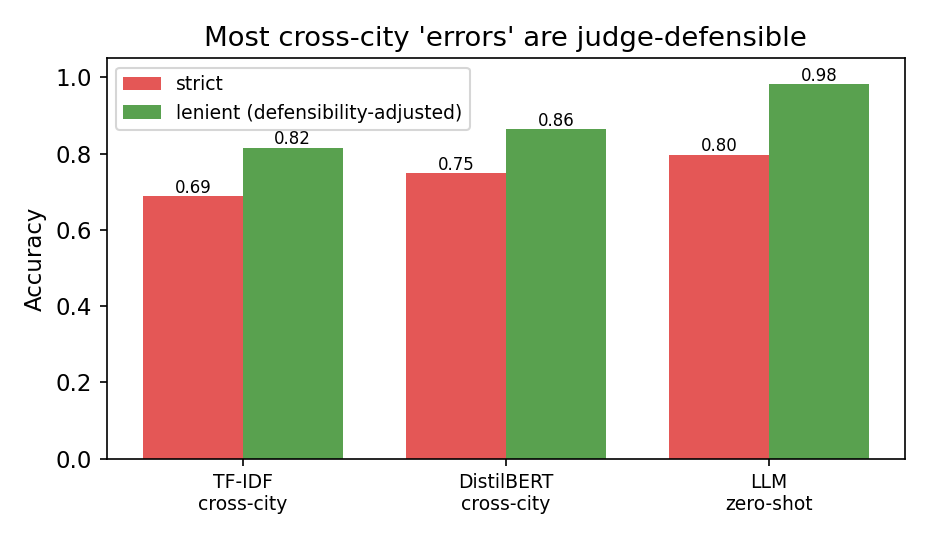
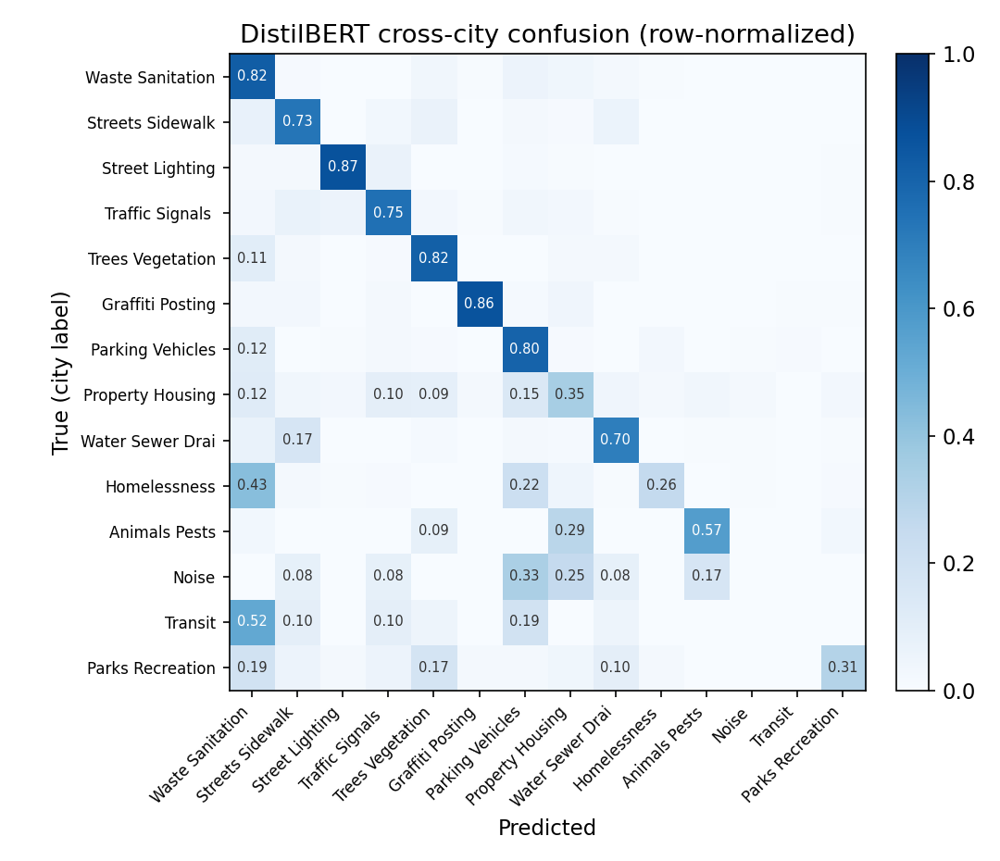

311 is the non-emergency municipal service channel used across the United States and Canada. Residents report potholes, missed garbage collection, graffiti, broken streetlights, illegal dumping, encampments, and hundreds of other conditions, often as free-text descriptions. These narratives are a large, renewable source of civic text with direct operational value: routing a request to the right department, prioritizing it, and detecting duplicates all begin with understanding what the text says.
Two obstacles have kept 311 free text underused. First, most large open-data portals publish only a structured category dropdown and omit the citizen narrative, so the text that would make the problem an NLP problem is frequently unavailable. Second, the work that does use 311 text trains and evaluates on a single city with a private split [1], so results are not comparable across studies and say nothing about whether a model transfers to a new city with a different taxonomy and reporting style.
This paper builds the missing benchmark and uses it to ask a question single-city work cannot: when a classifier appears to fail on a new city, is the model wrong, or is the city's recorded label wrong? Answering it requires an evaluation that does not assume the administrative label is ground truth, so the benchmark and the protocol that reads it are joint contributions:
The protocol is the point. Any benchmark built by harvesting the labels an institution already recorded inherits those labels as if they were semantic ground truth; a multi-city 311 corpus, where seven bureaucracies labeled the same kinds of request differently, makes the mismatch measurable. We show the mismatch is large, structured, and consequential enough to change which model a leaderboard prefers, and we release the instrument that measures it.
Applied 311 classification centers on complaint-type and department routing. Hashemi [1] classifies 311 request type from customer descriptions and, closest to our setting, harmonizes categories across two cities. Sukel et al. [3] route citizen-reported micro-events to city departments in Amsterdam using text, image, and location. Masdeval and Veloso [4] estimate urgency from SeeClickFix report text. These studies are single-platform or two-city; none provides a public multi-city benchmark with fixed splits. Nalchigar and Fox build a 311 reference ontology to align service codes across cities [18], the closest precedent to our harmonization, but release no public benchmark or evaluation splits, and White and Trump caution that 311 reporting is a noisy, biased signal of citizen need [24]. We are aware of no peer-reviewed US-city transformer-on-311 routing benchmark, which is the gap we fill.
Our leave-one-city-out protocol is the text instance of leave-one-domain-out domain generalization [5], and out-of-distribution generalization is a persistent problem in text classification specifically [6]; surveys of NLP domain adaptation [14] and the strong-baseline lessons of DomainBed [21] inform our setup. We treat each city as a domain whose taxonomy and register shift jointly.
Pervasive label errors destabilize benchmark rankings [7], annotation protocols leak label-correlated artifacts [8], and single benchmarks often measure less than their headline suggests [9]. A parallel line in perspectivist NLP argues that human label variation is often legitimate rather than error, and that evaluation should credit multiple valid labels [15],[16],[17],[23]; our acceptable-set metric is an instance of this ambiguity-aware evaluation. Administrative-code harmonization, such as occupation coding [10],[20] and medical coding from clinical text [19], is a direct analogue: short text mapped to a contested hierarchical code. Our gap analysis applies this lens to cross-jurisdiction transfer.
Zero-shot text classification via label descriptions and entailment [11] is the paradigm our LLM arm uses (the taxonomy and glosses go in the prompt). Fine-tuned small encoders often still beat zero-shot generative models within a domain [12]; our contribution is to compare them under domain shift, where the frozen label space of the fine-tuned model becomes a liability. Label-semantic pretraining injects label descriptions into the model [22], which our sentence-transformer and NLI baselines approximate at inference time.
311 reporting propensity varies with neighborhood demographics [13], and the category mix of requests characterizes urban location [2]. This structured-data tradition motivates treating city labels as noisy and non-neutral, which our judge quantifies directly.

We assemble MC311 in the stages of Figure 1. The first design constraint is that genuine citizen narrative
is scarce across cities. We verified by
direct probing that the largest portals (New York, Chicago, Los Angeles, Dallas, Washington) expose only
structured category fields; columns that look textual, such as descriptor or
resolution_description, are templated dropdown values, not narratives. Free text lives instead in
the Open311 API description field and in the app-based platforms that some mid-size cities
republish to their open portals. We assembled the corpus from sources where a populated citizen narrative was
confirmed by inspection.
| City | Content rows | Text field | Register / source |
|---|---|---|---|
| Baton Rouge | 44,226 | comments | call-center transcription |
| Bloomington IN | 39,954 | description | web/app, terse |
| Richmond VA | 36,974 | description | SeeClickFix |
| Auburn WA | 20,122 | description | SeeClickFix |
| Gainesville FL | 11,544 | description | myGNV app |
| Honolulu | 2,141 | description | letter-style, rich |
| San Francisco | 1,455 | description | Open311 API |
Table 1. Seven cities with confirmed citizen free text and a category label, after harmonization, exclusion of administrative categories, and the informativeness filter (Section 3.3). Register varies sharply, from transcribed phone calls to written letters to terse app reports, a source of domain shift that is confounded with jurisdiction and that we return to in Section 9.
Raw 311 text contains call-center shorthand that carries no signal (B/U, o.w.,
no sticker) and stub entries (Test1). We apply an informativeness filter that
removes rows shorter than three content tokens or matching a shorthand blacklist. The filter removes 8.1% of
rows, concentrated in the tersest city (Bloomington, 18%) and negligible in the letter-style city (Honolulu,
1%); manual inspection confirms it drops noise, not signal, and an earlier per-city run found its effect on scores
to be small (about +0.01 macro-F1). The canonical benchmark uses the filtered subset, fixed before the
evaluation split was drawn. Median request length ranges from 9 tokens
(Bloomington) to 24 (Honolulu), and only in the two most verbose cities do more than a tenth of requests
exceed the 64-token cap used by the encoder (Honolulu 14%, Gainesville 11%; under 2% elsewhere), which both
evidences the register shift and bounds any truncation effect. Requests also contain street addresses and
occasional phone numbers, which we address in Section 10.
The seven cities use 545 native categories (527 distinct labels), from Richmond's nine broad groups to San Francisco's 149 service names. We map every native category into a shared 14-class civic ontology: Waste and Sanitation, Streets and Sidewalks, Street Lighting, Traffic Signals and Signs, Trees and Vegetation, Graffiti and Postings, Parking and Vehicles, Property and Housing Code, Water Sewer and Drainage, Homelessness, Animals and Pests, Noise, Transit, and Parks and Recreation. Administrative and routing-only categories, such as San Francisco's per-department "General Request" tags, form a fifteenth bucket that we exclude from the classification task. The mapping is an ordered, first-match rule set applied to the native category string, which keeps it transparent and auditable; it covers 80 to 95 percent of records per city as content classes. The mapping file is released, and its boundaries are exactly where the analysis of Section 7 locates disagreement. Figure 2 shows these boundaries empirically: the heaviest cross-city confusion concentrates on a few neighboring pairs, with Waste and Sanitation acting as a hub (its overlap with Parking, Homelessness, Trees, and Property reflects debris, encampment cleanups, yard waste, and property nuisance all bordering it).

Task. Given the citizen free text, predict one of the 14 harmonized content classes.
Frozen split. For each city we hold out a fixed, seeded, stratified test set of up to 500 requests (3,502 total). Every model predicts on exactly these rows, so in-city and cross-city results, and all three arms, are one comparison rather than three. Training pools are capped at 8,000 to 12,000 requests per city.
Protocols. In-city trains on the held-out city's remaining data. Leave-one-city-out (LOCO) trains on all other cities. Both are evaluated on the same frozen test rows.
Metric. Macro-F1 over the union of the gold and predicted labels in the pooled test set, with 95% confidence intervals from 1,000 bootstrap resamples of the test examples. Averaging over the union rather than the gold classes alone charges a model for predicting a label no request carries, which slightly lowers the LLM's score (a handful of unparsed predictions add a zero-F1 class); we keep the union convention as the conservative choice. Pooled macro-F1 concatenates all cities' test rows and computes macro-F1 once over that union; the unweighted mean averages per-city macro-F1, weighting each city equally. Because per-city class sets differ, we report the pooled metric as primary and the unweighted mean as secondary, each also with San Francisco excluded (Section 9). Model differences use a paired bootstrap (1,000 resamples over the shared test rows). Trained-model scores are stable across three random seeds (DistilBERT in-city 0.824 ± 0.003, cross-city 0.553 ± 0.004).
Models. (i) TF-IDF over word 1-2-grams and character 3-5-grams with a logistic-regression head. (ii) DistilBERT fine-tuned for three epochs. (iii) gpt-4o-mini (temperature 0) prompted zero-shot with the 14-class taxonomy and short glosses, seeing no city-specific training data, which makes it an inherently cross-jurisdiction condition. As LLM ablations we also report gpt-4o (a stronger model) and a few-shot variant that adds one labeled exemplar per class drawn from the training cities. LLM inference runs through the provider batch APIs at half the standard token price. As additional baselines we report (iv) a fine-tuned RoBERTa-base encoder, and two zero-shot label-semantic methods that use the class descriptions but no training: a sentence-transformer that assigns the nearest class-description embedding, and an NLI entailment classifier. Hyperparameters and the verbatim prompt are released with the code.

| Model | In-city | Cross-city | In-city (no SF) | Cross-city (no SF) |
|---|---|---|---|---|
| TF-IDF + logistic regression | 0.784 [.76,.81] | 0.523 [.50,.54] | 0.761 | 0.483 |
| DistilBERT (fine-tuned) | 0.826 [.80,.85] | 0.557 [.54,.58] | 0.802 | 0.541 |
| LLM zero-shot, gpt-4o-mini (taxonomy in prompt) | – | 0.655 [.63,.68] | – | 0.622 |
| LLM zero-shot, gpt-4o | – | 0.704 [.68,.73] | – | 0.669 |
Table 2. Pooled macro-F1 [95% CI] on the frozen test set. Cross-city refers to LOCO for the trained models and to zero-shot for the LLM. Unweighted city means are lower (for example DistilBERT LOCO 0.447): a city with few classes contributes to few of the pooled per-class F1 terms, whereas the unweighted mean weights every city equally. Both aggregations are released.
Two results are stable across models. Crossing city boundaries costs roughly a third of macro-F1, from 0.826 to 0.557 for DistilBERT and from 0.784 to 0.523 for TF-IDF (Figure 3), and in-city exceeds cross-city for every held-out city for DistilBERT and for six of the seven for TF-IDF (Bloomington is a near-tie, 0.443 in-city versus 0.449 cross-city, within the bootstrap noise). The cross-city ordering, LLM zero-shot (0.655) above DistilBERT (0.557) above TF-IDF (0.523), is significant: paired bootstrap over the shared test examples gives a mean difference of +0.098 for LLM over DistilBERT and +0.130 for LLM over TF-IDF, both with 95% intervals excluding zero. This significance is at the request level; the ordering is heterogeneous across the seven cities (the LLM leads DistilBERT in five of seven, trailing in Richmond and Auburn), and with only seven jurisdictions we do not claim the ranking generalizes to all municipalities. A preliminary same-platform probe is inconclusive: Auburn-to-Richmond single-source transfer (0.585, Figure 5) exceeds Richmond's leave-one-city-out score (0.477) while Richmond-to-Auburn (0.338) falls below Auburn's (0.434), so shared platform does not uniformly explain the gap (single-source versus multi-source training confounds this cell; the full 7×7 single-source matrix is Figure 5, analyzed in Section 7). Giving a model the target label space in context helps where a fixed label space does not, without closing the gap; Section 7 tests this reading directly.
To ask what drives the LLM's cross-jurisdiction advantage, we vary the model and the prompt. A stronger model widens it: gpt-4o reaches 0.704, significantly above gpt-4o-mini (0.655; paired bootstrap P>0.99). Clean in-context demonstrations add a modest further gain: one representative labeled exemplar per class drawn from the training cities raises the cross-city score to 0.673 (bootstrap mean +0.025 over zero-shot, 95% CI [+0.001, +0.075]). The larger prompt lever is the label space itself: stripping the glosses to class names alone lifts the score to 0.700, near gpt-4o, so most of the signal is carried by the class names rather than their descriptions or the demonstrations. The advantage therefore comes chiefly from the target-label semantics that the taxonomy places in the prompt, largely captured by the class names, with smaller additive contributions from clean demonstrations and from model scale (gpt-4o). As a pipeline check, running gpt-4o-mini through the batch API reproduces the synchronous result (0.644 versus 0.655, not significant).
We also widen the model families. A stronger encoder does not help transfer: fine-tuned RoBERTa reaches 0.839 in-city, above DistilBERT, but only 0.519 across cities, so the gap is not a weakness of the DistilBERT baseline. Two zero-shot label-semantic methods that receive the class descriptions but no strong reasoning, a sentence-transformer that matches each request to the nearest class-description embedding (0.510) and an NLI entailment classifier (0.478), land at or below the classical TF-IDF baseline and far below the LLM. Access to label semantics is therefore necessary but not sufficient: the zero-shot LLM's advantage combines the label semantics in its prompt with its own capability, and neither a stronger encoder nor a simple label-matching model reproduces it.
Decomposing the cross-city macro-F1 by class shows where the advantage lives. On the head classes the LLM and the trained model are close: Waste and Sanitation (1,305 test requests) 0.853 for the LLM versus 0.825 for DistilBERT across cities, Graffiti 0.927 versus 0.914, Street Lighting 0.881 versus 0.868. The separation is concentrated in rare, city-idiosyncratic classes on which the leave-one-city-out DistilBERT collapses to zero: Noise (12) 0.000 to 0.759, Transit (21) 0.000 to 0.500, Homelessness (176) 0.380 to 0.830, Parking (224) 0.636 to 0.773. A model trained on the other cities cannot represent a class that is thin or absent in its source pool, whereas the class name in the prompt lets the LLM recognize it directly. The cross-jurisdiction ranking is therefore a tail-class phenomenon, not a uniform margin.
Three checks indicate the gap is genuine domain shift rather than an artifact of the split or the taxonomy. Deduplication: 18,265 training rows shared their exact text with a test request in the same city; removing them, together with corpus-wide exact duplicates, barely changes the picture (DistilBERT in-city 0.818, cross-city 0.539), so the roughly one-third drop is not produced by train-test overlap. Taxonomy coarsening: merging the confusable neighboring classes into an eight-class ontology recovers four to seven macro-F1 points for the trained models (TF-IDF cross-city 0.523 to 0.590, DistilBERT 0.557 to 0.601), which quantifies the taxonomy-boundary share of the difficulty, yet the gap to in-city persists. Temporal split: for all seven cities, pulling each city's records ordered by its native creation timestamp, training on the earliest 80% of requests and testing on the latest 20% lowers in-city macro-F1 by 0.051 on average (0.740 versus 0.791 for a random split on the same rows), with the largest single-city drop 0.12 (Honolulu). This temporal degradation is real but roughly five times smaller than the cross-jurisdiction gap, so the transfer gap is not an artifact of random splitting. Model family and input length: a stronger encoder and simple label-semantic classifiers, above, do not close the gap either, and doubling the encoder's input to 128 tokens does not help (cross-city 0.537 versus 0.557). The gap is not specific to one architecture, split, taxonomy granularity, or sequence length.
Performance varies sharply across held-out cities (Figure 4), from the degenerate San Francisco split (two content classes) to the mid-0.6s on more balanced cities, which is why we report San-Francisco-excluded aggregates alongside the full ones.


The full city-to-city matrix (Figure 5) makes the multi-source benefit concrete: training on a single other city and testing on a target averages 0.247 macro-F1, less than half the leave-one-city-out result (0.523 for TF-IDF), so pooling several source cities is worth far more than any single source. The structure is not explained by shared platform alone; the two SeeClickFix cities transfer asymmetrically (Auburn to Richmond 0.58, Richmond to Auburn 0.34), consistent with the inconclusive same-platform probe above.
Transfer difficulty is partly predictable from how far apart two cities' corpora are. Across the 30 city pairs that exclude the degenerate San Francisco cell (whose single-source transfer is uniformly near zero), single-source transfer correlates negatively with vocabulary divergence between the two cities (Spearman ρ = −0.54, p = 0.002); the class-distribution and text-length distances and the shared-platform indicator are not significant, and with a single same-platform pair the platform test is underpowered. Including San Francisco inflates the vocabulary correlation to ρ = −0.83, so we report the San Francisco-excluded value. Cross-jurisdiction degradation therefore tracks lexical shift between cities, which a shared taxonomy alone cannot remove.
A large drop is a strong claim, so we ask how much of the gap is genuine model failure. An independent LLM judge (gpt-4o-mini) reads each test request and returns the set of categories that are reasonable for the text, blind to the model prediction and to the city's own label. The judge assigns a single label to 67% of requests and two or more to the rest (mean 1.37), which quantifies genuine ambiguity in the taxonomy. Because the mean acceptable set spans only 1.37 of the 14 classes, a randomly chosen label is judge-accepted just 9.8% of the time and a constant majority-class predictor reaches 0.414 defensibility-adjusted accuracy; the lenient scores below are read against these floors, so the metric is discriminating rather than vacuously generous.
The judge also disagrees with the city's own label on 14.2% of requests (from 5.6% in San Francisco to 20% in Richmond). This is a measured rate of city labels not entailed by the text, on the same population the gap is computed on. It does not cap predictive accuracy, since a model can still exploit a city's administrative conventions, location cues, or lexical shortcuts; rather, it shows that matching the city label is not a pure measure of semantic classification ability.

The acceptable-set judgment is defined per example, so this analysis uses accuracy rather than macro-F1. Under a defensibility-adjusted metric that counts a prediction correct when it matches the city label or any judge-acceptable label, cross-city accuracy rises for every model (Figure 6): the LLM from 0.797 to 0.981, DistilBERT from 0.748 to 0.864, and TF-IDF from 0.688 to 0.816. This rescues about 91% of the zero-shot LLM's strict disagreements, and about 46% and 41% of DistilBERT's and TF-IDF's. The correction is consequential, not cosmetic: it erases a significant difference between the two strongest models. gpt-4o beats gpt-4o-mini on strict accuracy by a clear margin (0.832 versus 0.798, paired bootstrap P>0.99), but under the defensibility-adjusted metric the two are statistically indistinguishable (0.981 versus 0.979, 95% CI on the difference [−0.003, +0.007]). Whether the benchmark separates them at all depends on whether its labels are read as ground truth or as one defensible answer among several. To test whether this reflects same-family self-agreement, we repeated the acceptable-set judgment with an independent judge from a different model family (gemini-2.5-flash). The two judges agree on the acceptable set for 75% of requests (mean Jaccard 0.86), and the lenient scores barely move: the LLM's cross-city accuracy is 0.964 under the independent judge versus 0.981 under gpt-4o-mini, and DistilBERT's and TF-IDF's shift by under 0.01. Even the two-judge consensus, where both judges reject the city label, finds 9.6% of city labels textually unsupported. The effect is therefore not an artifact of same-family judging; human validation of a subset remains the natural next step (Section 9).
To rule out any single-vendor artifact and to give a reproducible way to choose judges, we ran the same acceptable-set task with five independent judges from five vendors (OpenAI gpt-4o-mini, Google gemini-2.5-flash, Mistral mistral-small, DeepSeek deepseek-chat, Cohere command-r). All five pass the discriminant floors, a random label accepted 9 to 14% of the time against recorded-label acceptance of 86 to 89% (discriminant margins 0.75 to 0.80), and their textually-unsupported-label rates fall in a narrow 10.7 to 14.2% band. A humans-free selection criterion that ranks judges by discriminant margin and mean cross-vendor agreement separates a tight core (OpenAI, Google, DeepSeek; pairwise exact-set agreement 0.75 to 0.79) from a more permissive outlier (Cohere, mean acceptable set 1.99, agreement 0.42 to 0.49); a sixth candidate could not be run reliably at scale on the available batch endpoint and is excluded on operational grounds. The majority-of-five consensus finds 11.9% of recorded labels textually unsupported. Label noise is therefore a property of the corpus, not of one judge or one model family.
The separation between the LLM and the trained models lives precisely where a single answer exists. On the requests the judge marks unambiguous (a single acceptable label, 2,329 of 3,502), the LLM's cross-city accuracy is 0.850 against 0.776 for DistilBERT; on the multi-label requests the two converge (0.695 and 0.691), because there is no single target to separate on. A router that auto-routes judge-unambiguous requests and escalates the multi-label ones is a direct use of this structure.
The two-judge consensus also functions as a corpus audit. Tracing the requests both judges reject back to their native categories exposed five harmonization-rule errors, where a keyword fired the wrong first-match: garbage-collection reports routed to drainage through a "leak" token, sewer backups routed to waste through a "backup" token, and street grading routed to waste. Correcting the rules relabels 619 corpus rows (7 of the 3,502 test rows); every pooled macro-F1 moves by at most 0.001, so the results below stand on the corrected corpus, which is the one released. The measured cross-jurisdiction gap therefore conflates three effects this analysis makes visible without cleanly separating: genuine domain shift between cities, non-comparability of the harmonized taxonomy at its boundaries, and text-label mismatch. The confusion structure identifies where the boundary effects concentrate (Figure 7).

The dominant confusions are exactly the service-versus-content boundaries a text model cannot be expected
to honor from the text alone. A request labeled MISSED WOODY WASTE SERVICE reads "tree limbs not
picked up"; the city label names a collection service, the text names the material, and both Waste and Trees
are defensible.
The disagreement between annotators and the confusion between models are the same object. Correlating the two-judge co-acceptability graph over the 14 classes (how often a pair of labels is jointly acceptable for one request) with the cross-city confusion matrix gives Spearman ρ = 0.75 (p < 10−17; ρ = 0.63 after partialling out the product of the two classes' frequencies, so this is not a frequency artifact): the pairs a judge accepts interchangeably, Trees and Waste, Streets and Trees, Homelessness and Waste, are the pairs the trained model mixes up. The cross-jurisdiction gap is concentrated where the taxonomy is ambiguous, not spread evenly across the label space.
This turns the boundary into a design lever. Agglomerating the classes by co-acceptability yields a data-driven ontology whose merges are auditable and coincide with the confusion of Figure 7. Because the ambiguity is concentrated on a few pairs, a targeted merge removes most of it: at ten classes the derived taxonomy leaves 20% of requests multi-acceptable against 31% for the average equal-size random merge, and at eight classes 12% against 26%, lower than every one of 200 random merges with matched cluster sizes at each granularity. The output is a concrete ontology revision a 311 consortium could adopt, derived from measured ambiguity rather than intuition.
The judge is also a training signal, which turns the diagnosis into an intervention. For each leave-one-city-out fold we relabel the training requests whose recorded label the judge rejects (12.3% to 13.3% per fold) to a judge-acceptable label, and fine-tune DistilBERT on the repaired pool. Pooled cross-city macro-F1 rises from 0.559 on the raw labels to 0.615 (paired bootstrap +0.055, 95% CI [0.029, 0.080]). The gain is the judge's signal rather than relabeling in itself: relabeling the same rows to a random class instead reaches only 0.573, so the repaired-over-random margin is +0.041 (95% CI [0.018, 0.063]), and the judge condition beats the random control on six of the seven folds. The improvement is a pooled, common-class effect and varies by held-out city, with four of the seven cities improving; it is a pooled gain, not a uniform one. Repairing administrative labels with the protocol therefore produces models that transfer measurably better, and the random-relabel control shows the improvement tracks what the judges certify, not the act of changing labels.
For civic-technology deployment, the result is a caution and an option. Across the seven jurisdictions studied here, supervised transfer to an unseen city cost roughly a third of the in-domain macro-F1, driven substantially by taxonomy mismatch rather than by the model; we do not claim a universal figure from seven cities. GPT-4o-mini achieved the highest pooled cross-jurisdiction score, though its advantage was heterogeneous across cities, so a zero-shot LLM with the target city's taxonomy in the prompt is a reasonable starting point when a city lacks its own labels rather than a guaranteed winner.
For benchmark builders, the broader lesson is that harmonizing labels across sources imports noise and non-comparability that a single accuracy number hides; a defensibility-adjusted metric grounded in an explicit acceptable-set judgment is a reusable correction for any administrative-text benchmark assembled this way.
The corpus covers seven cities, weighted toward small and mid-size municipalities where free text is openly available, and source platform is confounded with city identity, so register shift and jurisdiction shift are not fully separable; the same-platform Richmond and Auburn pair is the natural cell for isolating this and is available in the corpus. San Francisco contributes only two content classes after administrative categories are removed, so its per-city numbers are degenerate and it inflates unweighted aggregates; we report San-Francisco-excluded variants throughout, and Honolulu (500 test requests, thirteen classes) is also small. The harmonization is one defensible mapping among several, and its boundaries drive the confusions of Section 7; a sensitivity analysis under an alternative mapping is future work. Labels are the cities' own routing categories and carry the 14.2% noise the judge measures. The defensibility judgment is LLM-adjudicated; validating a subset against multiple human annotators, with an agreement statistic, is the next step and would ground the acceptable-set metric. We mitigate same-family bias between the judge and the zero-shot arm by confirming the defensibility effect with an independent-family judge (Section 7), which leaves the lenient scores nearly unchanged; a multi-annotator human study remains the definitive check. The LLM arm is a single model at temperature zero, and the public portals may fall within its training data, though it never sees the harmonized labels paired with text.
311 requests are public records, but their free text contains personal data: street addresses, occasional phone numbers, and sometimes names, and the Homelessness category concerns a vulnerable population. The released corpus removes phone numbers (2,861 spans) and email addresses (726); street addresses are retained, because they are intrinsic to a service request and are already public in the source portals. Names are not systematically removed, which we flag as a residual-PII risk to be addressed before wide redistribution. The reporting cities' open-data licenses are listed per source, and we distribute derived, harmonized text for research use rather than a re-identifiable master record. We discourage using this benchmark for individual-level surveillance or enforcement targeting.
The code, the harmonized data, the mapping file, the frozen split, the per-example predictions for every
arm, the acceptable-set judgments, and the scored results with confidence intervals are all released at
github.com/ApartsinProjects/311. The pipeline runs as
collect_311.py, harmonize.py, the informativeness filter filter_labels.py,
make_split.py, the three evaluation arms, the acceptable-set judge
defensibility_judge.py, and score_aligned.py. Together these regenerate every number
in this paper, including the confidence intervals, the defensibility-adjusted scores, and the text-label
mismatch rates, from the released artifacts. A datasheet for the dataset (Gebru
et al.) accompanies the release.
Benchmarks built from administrative labels measure two things at once: how well a model reads text, and how well an institution's recorded category matches that text. We introduced a defensibility protocol, two blind cross-family LLM judges with discriminant floors and a corpus-audit loop, that separates the two, and we instantiated it on MC311, the first public multi-city free-text 311 benchmark. On MC311 the protocol shows that most of the apparent cross-jurisdiction gap is defensible-label disagreement rather than model failure, that the a significant gap between the two strongest models vanishes under the defensibility-adjusted metric, that annotator ambiguity and model confusion fall on the same class boundaries (Spearman 0.75), and that relabeling judge-rejected training rows improves pooled cross-jurisdiction transfer over both the raw labels and a random-relabel control. Run as an audit, it located five real mapping errors in the corpus. The benchmark, its harmonization, and the protocol are released so that any administrative-label benchmark can measure the distance between its labels and its text.
score_aligned.py and the collection scripts. All references validated with
Crossref, OpenAlex, and arXiv.